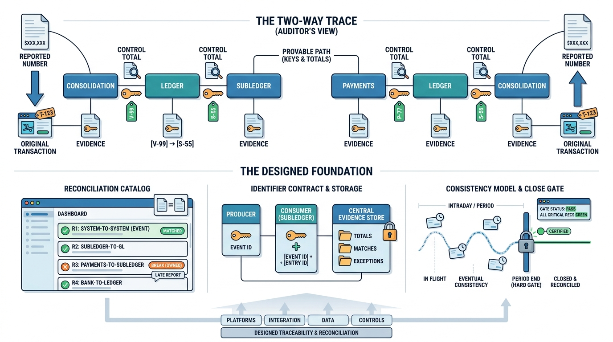

Part III — INTEGRATION: The Finance Estate as One System
Reconciled by Design: Traceability and Audit Across Boundaries

Image generated by Google Gemini (gemini-3-pro-image-preview)
Part III — INTEGRATION: The Finance Estate as One System

Image generated by Google Gemini (gemini-3-pro-image-preview)